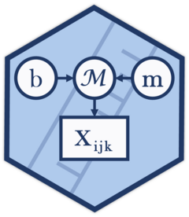

Distribution functions for the psychometric function model
Source:R/distributions.R
psychometric_function_dist.RdDensity and random generation for the psychometric_function() model:
the number of positive responses ("yes", "correct", "longer") out of
n_trials at a stimulus intensity, a binomial with probability
$$\psi(x) = \gamma + (1 - \gamma)(1 - \lambda) F(x),$$
where \(F\) is the sigmoid with its midpoint and width.
Usage
dpsychometric_function(
x,
intensity,
midpoint,
width,
guess = 0,
lapse = 0,
n_trials = 1,
sigmoid = c("normal", "logistic", "gumbel_min", "gumbel_max", "weibull", "lognormal",
"loglogistic"),
log = FALSE
)
rpsychometric_function(
n,
intensity,
midpoint,
width,
guess = 0,
lapse = 0,
n_trials = 1,
sigmoid = c("normal", "logistic", "gumbel_min", "gumbel_max", "weibull", "lognormal",
"loglogistic")
)Arguments
- x
Integer vector. Number of positive responses, between 0 and
n_trials.- intensity
Numeric vector. Stimulus intensity. Must be positive for the sigmoids that read it on the log scale (
"weibull","lognormal","loglogistic").- midpoint
Numeric. Intensity at which the sigmoid \(F\) is 0.5, in the units of
intensity. Positive for the log-scale sigmoids.- width
Numeric, positive. Distance on the intensity axis between the points where \(F\) is 0.05 and 0.95; for the log-scale sigmoids, in log units of intensity.
- guess
Numeric in [0, 1). Guess rate, the lower asymptote: 0.5 in 2AFC,
1 / min m-AFC.- lapse
Numeric in [0, 1). Proportion of trials on which the observer does not attend and responds at the guess rate. The upper asymptote is
1 - lapse * (1 - guess).- n_trials
Integer vector. Number of trials per observation (default 1, a single binary response).
- sigmoid
The sigmoid \(F\); see
psychometric_function().- log
Logical. If
TRUE, returns the log-density (defaultFALSE).- n
Integer. Number of observations to generate.
intensity,n_trialsand the parameters are recycled to this length.
Value
dpsychometric_function() returns the (log-)density, a binomial probability.
rpsychometric_function() returns an integer vector with the number of positive
responses per observation.
Parameter scales
These functions take every argument on the natural scale, while
psychometric_function() estimates width on the log scale and guess and lapse
on the logit scale (and midpoint on the log scale for the log-scale
sigmoids). Transform a fitted value back before passing it here.
References
Schütt, H. H., Harmeling, S., Macke, J. H., & Wichmann, F. A. (2016). Painfree and accurate Bayesian estimation of psychometric functions for (potentially) overdispersed data. Vision Research, 122, 105–123. doi:10.1016/j.visres.2016.02.002
Wichmann, F. A., & Hill, N. J. (2001). The psychometric function: I. Fitting, sampling, and goodness of fit. Perception & Psychophysics, 63(8), 1293–1313. doi:10.3758/BF03194544
Examples
# Probability of 7 correct out of 10 2AFC trials at the midpoint
dpsychometric_function(7, intensity = 1, midpoint = 1, width = 2, guess = 0.5,
n_trials = 10)
#> [1] 0.2502823
# Simulate a method-of-constant-stimuli experiment with a Weibull observer
dat <- data.frame(contrast = rep(c(0.01, 0.02, 0.04, 0.08, 0.16), 4))
dat$n_correct <- rpsychometric_function(nrow(dat), dat$contrast, midpoint = 0.04,
width = 2, guess = 0.5, lapse = 0.02,
n_trials = 40, sigmoid = "weibull")
head(dat)
#> contrast n_correct
#> 1 0.01 19
#> 2 0.02 21
#> 3 0.04 24
#> 4 0.08 40
#> 5 0.16 40
#> 6 0.01 23